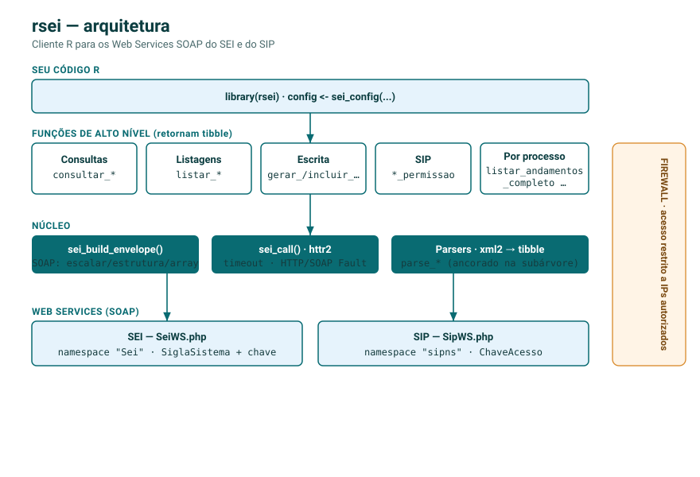
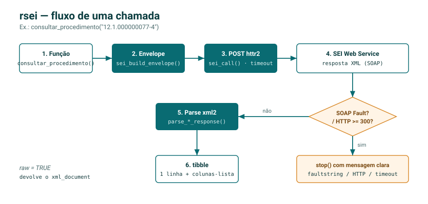

rsei é um toolkit em R para os Web Services SOAP do SEI (Sistema Eletrônico de Informações). Ele monta os envelopes SOAP no formato esperado pelo SEI, executa as chamadas com httr2, trata erros HTTP e SOAP Fault, e devolve os resultados como tibble. Cobre consultas (consultar_*), listagens (listar_*), operações de escrita (gerar_procedimento, incluir_documento, enviar_processo, …) e os serviços do SIP (listar_permissao, replicar_permissao, replicar_usuario).
⚠️ Acesso restrito por IP. Os Web Services do SEI são protegidos por firewall: só respondem a requisições vindas de IPs/servidores previamente autorizados no cadastro do serviço no SEI. As funções deste pacote só retornarão dados quando executadas a partir de um host autorizado (por exemplo, o servidor institucional). A partir de um IP não autorizado as chamadas falham por timeout ou conexão recusada. A autenticação adicional é feita por
SiglaSistema+ chave de acesso (IdentificacaoServico).
Arquitetura
Todas as operações são wrappers finos sobre um único motor SOAP (sei_build_envelope() + sei_call()), com configuração centralizada (sei_config()) e parsers que devolvem tibble.

O fluxo de uma chamada — da função ao tibble, com tratamento de erro:

Configuração
library(rsei)
# Configuração reutilizada por todas as funções
cfg <- sei_config(
sei_url = "https://sei.pe.gov.br/sei/ws/SeiWS.php",
sigla_sistema = "HORTENSIAS",
identificacao_servico = Sys.getenv("RSEI_IDENTIFICACAO_SERVICO") # chave de acesso
)
# Opcional: definir como padrão da sessão (dispensa passar `config`)
sei_set_default_config(
sigla_sistema = "HORTENSIAS",
identificacao_servico = Sys.getenv("RSEI_IDENTIFICACAO_SERVICO")
)Exemplo
# Consultar um processo (retorna um tibble)
proc <- consultar_procedimento("0000000000.000001/2020-11", config = cfg)
proc$Especificacao
proc$Assuntos[[1]] # coluna-lista com os assuntos
# Listar unidades, séries, tipos de processo, ...
unidades <- listar_unidades(cfg)
series <- listar_series(cfg)As operações de escrita alteram dados no SEI e devem ser validadas em ambiente de homologação/treino antes de uso em produção.
rsei faz parte de um ecossistema de pacotes R desenvolvido na Secretaria Executiva de Monitoramento Estratégico. ```